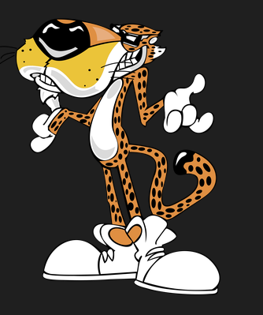

My Mascot is Cortland Chester Cheetah
Chester Cheetah is a fictional character and the official mascot for Frito-Lay's Cheetos brand
snacks as well as Chester's Snacks which consists of flavored fries, popcorn and puffcorn.
Some fun facts about Cortland Chester Cheetah
- Cheetos' original mascot was the Cheetos Mouse, who debuted in 1971 and disappeared in the late '70s.
In 1986, Chester Cheetah first appeared in television commercials as an animated cartoon character.
- In 1992, Chester's own television program called Yo!
It's the Chester Cheetah Show! was under development for the Fox Kids.
- Chester Cheetah: Too Cool to Fool is a 1992 video game that starred Cheetos mascot Chester Cheetah.

Back to home